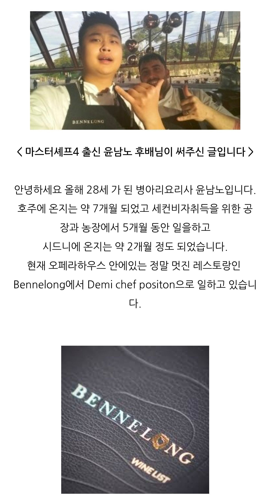
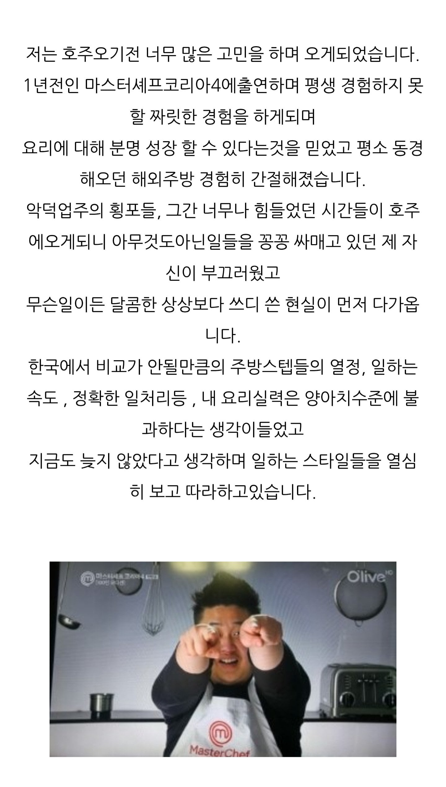
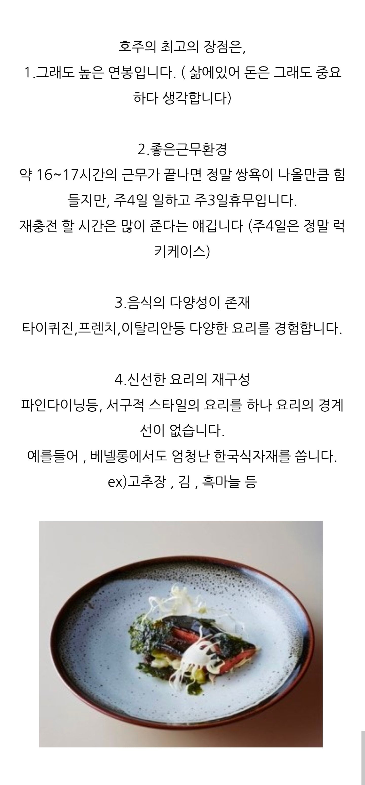
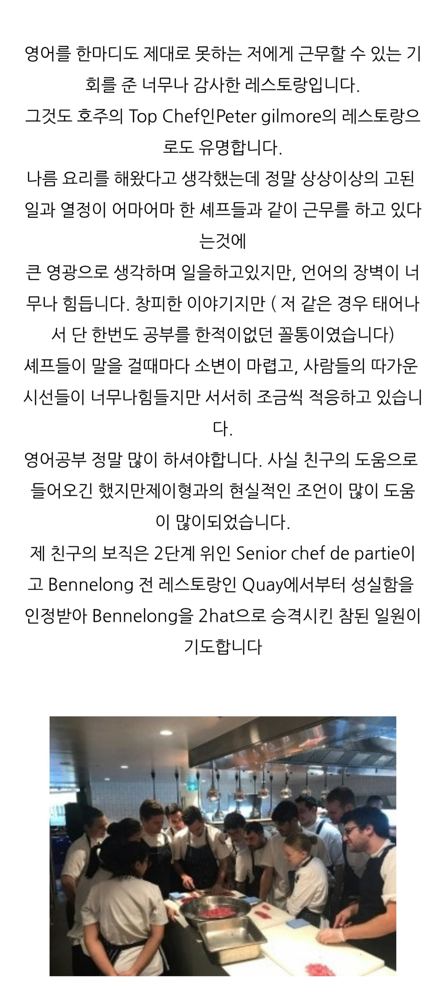
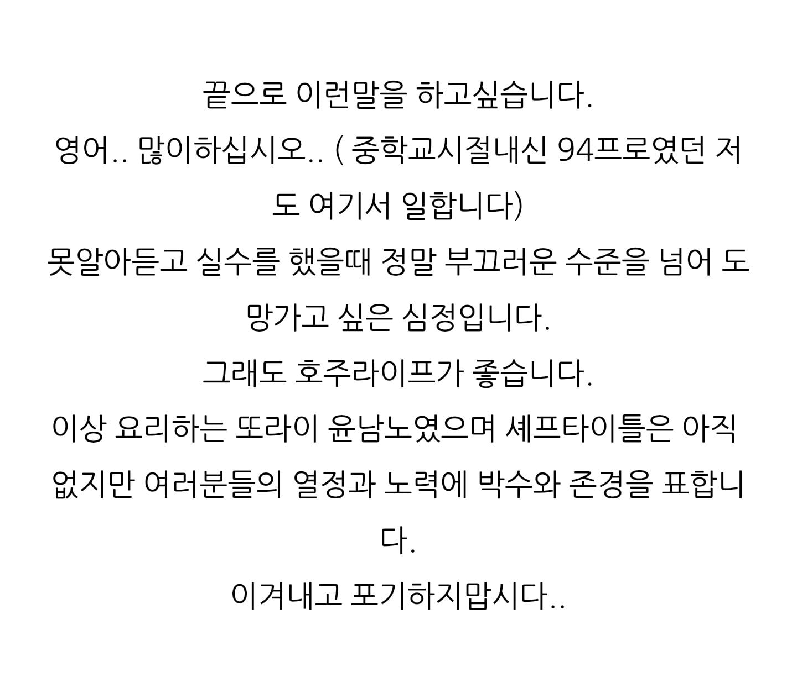

돌아이 아니고 성실한 청년 그 자체





돌아이 아니고 성실한 청년 그 자체
글을 잘쓴다잉 뭘해도 될법한 청년이었네
성실한청년
진짜 성실맨이야..
멋있음 청년
먹을 거 많이 좋아하는 성실한 청년
남노 더 성공해라
돌아이 호소인;;
젊을때 멋모르고 치열하게 사는거 인생 전반에 걸쳐 영향을 주는것 같음. 나도 아직도 그 빨로 먹고삶.
이새끼 분명 뒤가 구린게 있을것이다고 확신한 관상충들 싹다 아닥시킨 케이스 ㅋㅋ 진짜 요리밖에 모름 ㄹㅇ
물론 나도 성격 더러워보인다고 생각함..
나는 첨 봤을 때부터 인상 좋다고 얘기했음
비추 폭탄이더라
뚱한 표정이라 뭐가 좀 그랬어 ㅋㅋ
대단해
진짜열심히 사는구나..
그냥 성실한 청년
"성실"
근데 글을 상당히 잘쓰는데?
어케 내신 94%가 이렇게 글을 잘쓰지?
공부랑 상관없이 책을 나름 읽었나봐
학교 공부랑 글쓰기 능력은 별개니깐 대문호중에 학교 공부 못한 사람도 많음
성실한 청년
호감청년
냉부 최다패 ㅋㅋ
남노형
음식점 차리느라 빚 내서 지금까지번거 다 떄려박고
아직도 예전부터 살던 반지하에삼
ㄹㅇ 요리밖에 모르는새끼
워킹 갔을때 사람들이 꿈꾸는게
3달 어학학원 다니고 괜찮은 일을 할 수 있다는 희망임
전화인터뷰 오면 오케이만 남발하고..
요리에만 돌아이기질로 노력하는거지
그 자체는 순수하고 열심히 사는 청년
사랑의 열매 유튜브 나와서 요리하는거 보면 참 보기 좋음
열심히 살았네
근데 영어 한마디 못하고 어떻게 들어갔지...;
대단
야근하는 돌아이였노
글도 깔끔하게 잘쓰네 대호감
솔직히 비호에 조금 더 가까웠는데 이 글 보니 리스펙하게 되네 앞으로 팬은 못해도 응원은 해줘야징
근데 영어못하면 주방에서 안쓸텐데….. 특별한 케이스 인가.. 소개로 들어갓나….
의사소통 없이 요리가 가능하지가 않을텐데…
하다못해 디시워셔도 영어못하면 나가리임
존나멋있어 윤남노 마쉐코 이후 워홀 주방러는 진짜 참요리사 인정이다